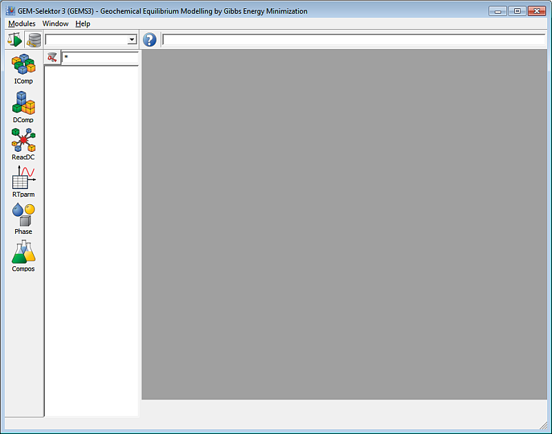

(1) This MainDialog appears
after you have started the GEMS executable file:

Using large buttons in the
middle, you can enter two main modes of GEMS operation.
(2) From MainDialog, the "Get Started" or "About" button opens the HelpViewer - a simple browser that shows the runtime HTML documentation. This browser also shows help pages by pressing F1 on any data object on GEMS screen forms. :
In the Preferences, you
can set GEMS HelpViewer to access the latest version of run-time
documentation from GEMS-PSI home site. At best, you will need a fast
LAN internet connection for this mode.
(3) If you read this screenshot tutorial and run GEMS in parallel then click on the "Computation of Equilibria" on the MainDialog (and proceed to the next page of Screenshot Gallery).
Back to main GEMS-PSI page